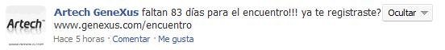
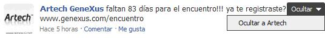
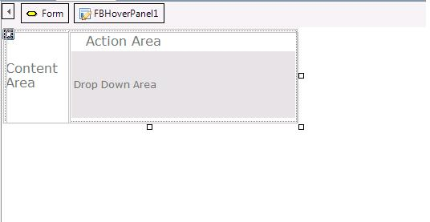
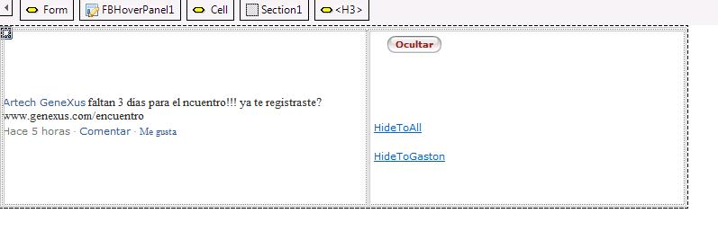
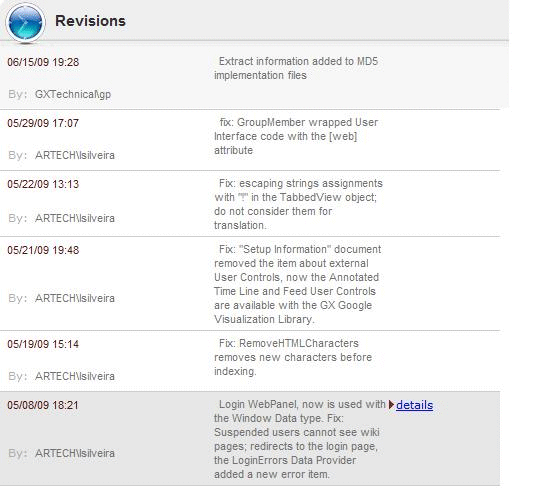

There are many user interfaces where you need to show information on demand because showing all the information at once turn the page unusable. A common pattern to showing on demand information is show information when the mouse over certain elements of the user interface. If you consider this pattern is suitable for your needs so the Hover Panel Control is the right control for you. A Simple Use Case: Facebook Contextual ActionsIn order to explain how to use this control, we are going to show a simple use case . On Facebook, when you see your activity log if you over the mouse on a particular item you can see at the top right a new User Interface element (In this sample a button with the "Ocultar" caption)  And if you click that element you see a drop down menu with actions  If you look this sample basically we can identify 3 elements:
How to use the Hover PanelWhen you drag and drop the Hover Panel on a form, you are going to identify the above areas.  After you drag & drop the panel you have to decide what is the content for each area. For example in our Use Case you should have something similar to the following picture  After that you just need to generate and see the hover panel in action. Take into account that you can add the Hover Panel in a free style grid where the content of the sections can change for each item. In GX Server UI we are using the hover panel control in order to give contextual information for each item in the revision log.  PropertiesCategory: Action Section
When to use? If
you want to overwrite the default behavior where the action section is
autohided and you need to show the action section always visible. Category: Drop Down Section
RuntimeName: DropDownSectionAlign
Events
By
default when you click in the Action Section the Hover Panel will show
the Drop Down Section. Sometimes instead of showing something you need
to execute some action (For example edit, remove, etc some
information), in this cases you will need to handle the event
ActionClick in the Hover Panel. (this case is in general used in
combination with the DropDownSectionVisible = false). Drop Down Section Behavior: FloatOnLeft, FloatOnRight, Invisible |
| Backlinks | |
| Category:Common Controls | Web Panel form |